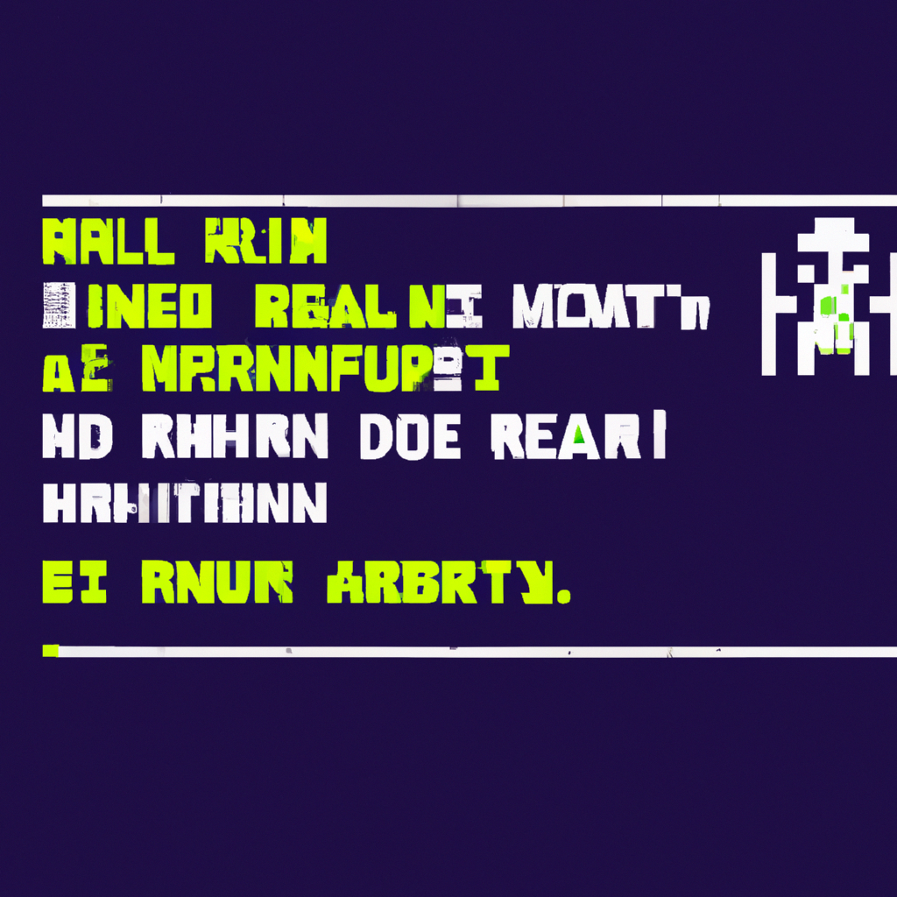

Why AI will never replace the radiology
Artificial intelligence (AI) has been making headlines for years, with people predicting that it will soon replace the radiologist. While AI can undoubtedly assist radiologists in their work, it will never replace them.
Radiology is a complex task that requires in-depth knowledge and experience. AI is not capable of making the sophisticated clinical judgments that radiologists are trained to make. AI is helpful in recognizing patterns and can help radiologists make more informed decisions, but it cannot make a diagnosis or provide treatment advice on its own.
In addition, AI still needs to be trained and supervised by radiologists. Even if AI can recognize patterns, it still needs to be taught what to look out for. AI algorithms are also not perfect and can cause false positives or negatives, which can lead to incorrect diagnoses.
Finally, AI is not able to consider the patient's overall health and lifestyle, which are important factors in making a diagnosis. AI cannot take into